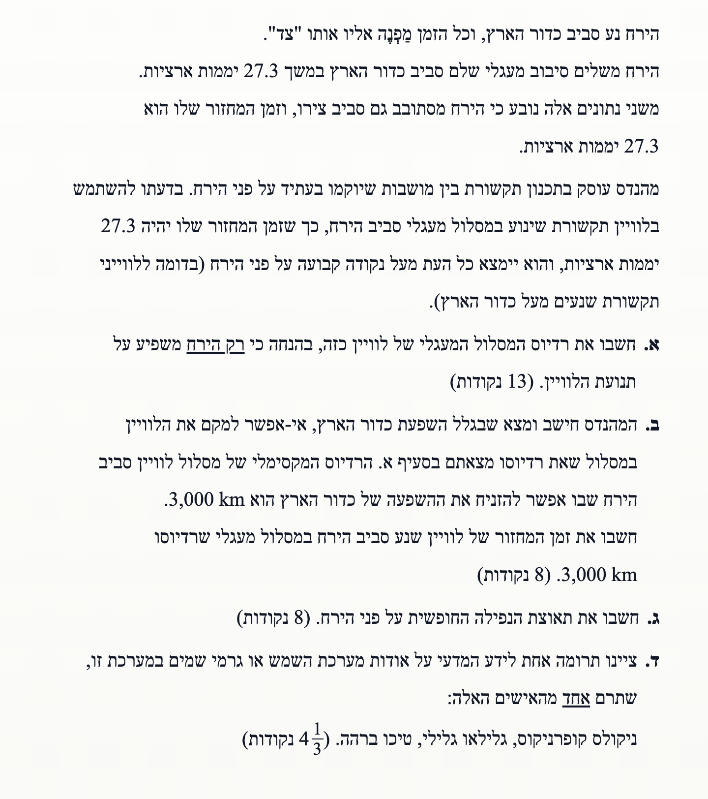

מכניקה וכבידה: הירח
בגרות 2006 | שאלה 5
פתרון מודרך, צעד-אחר-צעד, הכולל ניתוח תנועה מעגלית וחוק קפלר השלישי.
עודכן:
--- --:--:--
מבט כללי על השאלה
בשאלה זו אנו חוקרים לוויין במסלול סביב הירח. עלינו לקשר בין זמן המחזור של הירח סביב עצמו לבין רדיוס המסלול של הלוויין, להשתמש בחוק קפלר השלישי להשוואה בין מסלולים, ולחשב את עוצמת השדה הגרוויטציוני על פני הירח.
סדר העבודה: המרת יחידות למערכת MKS, יישום חוקי ניוטון לתנועה מעגלית, ושימוש ביחסי קפלר לצורך חישובים יעילים.

[תמונת השאלה המקורית]
לא נמצאה תמונה בשם question-image.png באותה תיקייה.
מה נתון:
- זמן מחזור: \( T_1 = 27.3 \text{ days} = 2,358,720 \text{ s} \)
- מסת הירח: \( M = 7.35 \cdot 10^{22} \text{ kg} \)
- קבוע הכבידה: \( G = 6.67 \cdot 10^{-11} \text{ SI} \)
מה מחפשים: רדיוס המסלול \( r_1 \) של הלוויין מעל נקודה קבועה.
נוסחאות מהדף:
\( \Sigma F = m a_R \)
\( F_g = G \frac{Mm}{r^2} \)
\( a_R = \frac{4\pi^2 r}{T^2} \)
פתרון צעד-אחר-צעד:
נשווה את כוח הכבידה לכוח הצנטריפטלי הפועל על הלוויין:
\[ G \frac{M m}{r_1^2} = m \frac{4\pi^2 r_1}{T_1^2} \]
\[ r_1^3 = \frac{G M T_1^2}{4\pi^2} \implies r_1 = \sqrt[3]{\frac{G M T_1^2}{4\pi^2}} \]
הצבת נתונים:
\[ r_1 = \sqrt[3]{\frac{6.67 \cdot 10^{-11} \cdot 7.35 \cdot 10^{22} \cdot (2,358,720)^2}{4\pi^2}} \approx 88,421,173 \text{ m} \]
מסקנה: \( r_1 = 8.84 \cdot 10^7 \text{ m} \)
טיפ מורה: הקפידו להמיר את זמן המחזור לשניות כדי להשתמש בקבוע הכבידה העולמי בצורה נכונה. שימו לב שמסת הלוויין מצטמצמת – המסלול נקבע רק על ידי הכוכב המרכזי.
מה נתון:
- מסלול א': \( r_1 = 8.84 \cdot 10^7 \text{ m}, T_1 = 2,358,720 \text{ s} \)
- מסלול ב': \( r_2 = 3,000 \text{ km} = 3 \cdot 10^6 \text{ m} \)
מה מחפשים: זמן מחזור חדש \( T_2 \).
נוסחאות מהדף:
\( \left(\frac{T_1}{T_2}\right)^2 = \left(\frac{r_1}{r_2}\right)^3 \)
חישוב לפי חוק קפלר השלישי:
מכיוון ששני המסלולים הם סביב אותו גוף (הירח), נוכל להשתמש ביחס הקבוע של קפלר:
\[ \left( \frac{T_2}{T_1} \right)^2 = \left( \frac{r_2}{r_1} \right)^3 \implies T_2 = T_1 \cdot \sqrt{\left( \frac{r_2}{r_1} \right)^3} \]
נציב את היחס בין הרדיוסים:
\[ T_2 = 2,358,720 \cdot \sqrt{\left( \frac{3 \cdot 10^6}{8.84 \cdot 10^7} \right)^3} \]
\[ T_2 \approx 2,358,720 \cdot \sqrt{0.000039} \approx 2,358,720 \cdot 0.00624 \approx 14,741 \text{ s} \]
מסקנה: \( T_2 = 1.47 \cdot 10^4 \text{ s} \) (כ-4.10 שעות)
טיפ מורה: שימוש בחוק קפלר השלישי הוא הדרך האלגנטית ביותר להשוות בין שני לוויינים המקיפים את אותו גוף. זה חוסך מאיתנו את השימוש בקבועים פיזיקליים ומדגיש את היחס הריבועי-בשלישית שמאפיין את הכבידה.
מה נתון: רדיוס הירח: \( R = 1.74 \cdot 10^6 \text{ m} \), מסת הירח כנ"ל.
מה מחפשים: תאוצת הכובד על פני הירח \( g_m \).
נוסחאות מהדף:
\( F = mg \)
\( F_G = G \frac{m_1 m_2}{r^2} \)
חישוב:
תאוצת הכובד נובעת מכוח הכבידה הפועל על יחידת מסה המונחת על פני הכוכב:
\[ g_m = \frac{GM}{R^2} = \frac{6.67 \cdot 10^{-11} \cdot 7.35 \cdot 10^{22}}{(1.74 \cdot 10^6)^2} \approx 1.619 \text{ m/s}^2 \]
מסקנה: \( g_m = 1.62 \text{ m/s}^2 \)
טיפ מורה: שימו לב שערך זה קרוב מאוד לערך המקובל של תאוצת הכובד על הירח. זהו כוח חלש משמעותית מזה של כדור הארץ, מה שמסביר מדוע אסטרונאוטים יכולים לקפוץ גבוה כל כך על הירח.
1. ניקולס קופרניקוס: חולל מהפכה מדעית כאשר ניסח את המודל ההליוצנטרי – המודל שבו השמש נמצאת במרכז המערכת וכדור הארץ חג סביבה.
2. גלילאו גליליי: גילה את ארבעת ירחי צדק הגדולים באמצעות טלסקופ, ובכך הוכיח שקיימים גרמי שמיים שאינם סובבים סביב כדור הארץ.
3. טיכו ברהה: ביצע את המדידות התצפיתיות המדויקות ביותר של אותה תקופה. הנתונים המפורטים שאסף אפשרו לקפלר לגלות את חוקיו.